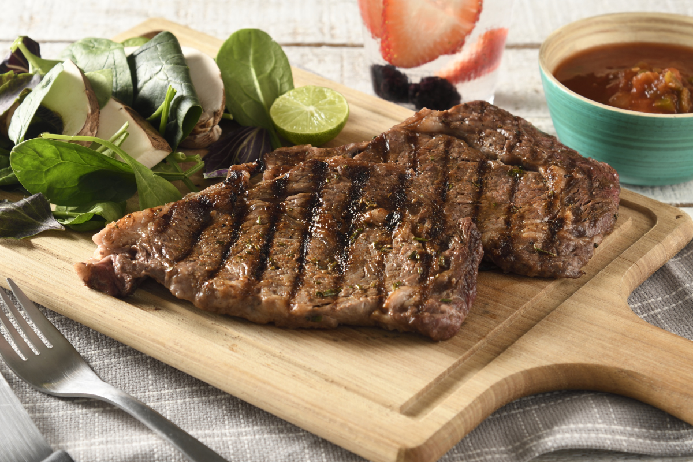
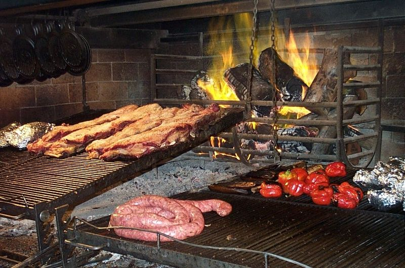
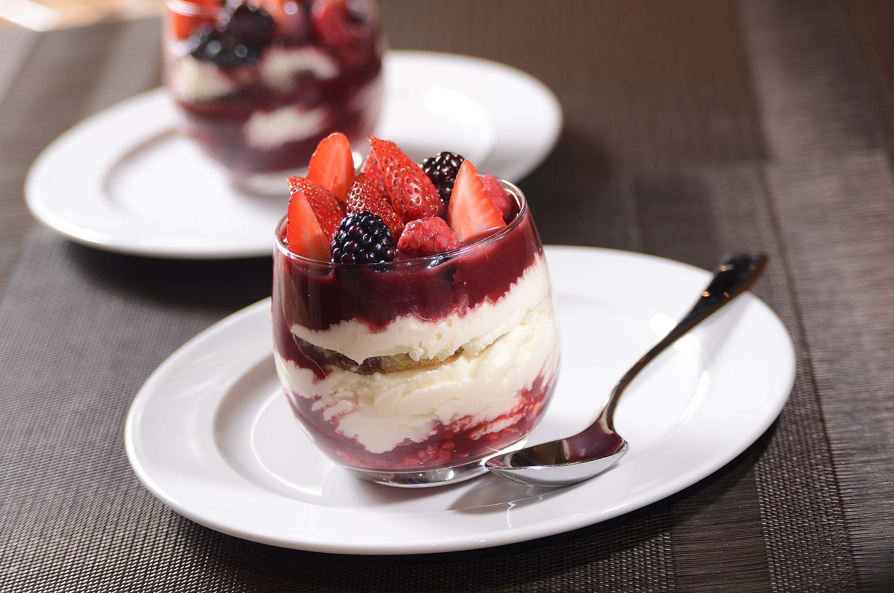

Buena es la carne,
Buena es la cesina,
mejor es la Cocina

Favoritos



Historial
- Cras justo odio
- Dapibus ac facilisis in
- Morbi leo risus
- Porta ac consectetur ac
- Vestibulum at eros
- Cras justo odio
- Dapibus ac facilisis in
- Morbi leo risus
- Porta ac consectetur ac
- Vestibulum at eros
- Cras justo odio
- Dapibus ac facilisis in
- Morbi leo risus
- Porta ac consectetur ac
- Vestibulum at eros
- Cras justo odio
- Dapibus ac facilisis in
- Morbi leo risus
- Porta ac consectetur ac
- Vestibulum at eros
Asado
Fecha de publicacion: 4 de julio de 2012.

El asado, barbacoa, parrilla o parrillada es una técnica de cocción mediante la que los alimentos (generalmente trozos de carne) son expuestos al calor de fuego o brasas para que se cocinen lentamente. El calor se transmite gradualmente al alimento, que por lo general está suspendido sobre el fuego o cerca de las brasas. El fuego se logra a partir de carbón vegetal o de madera, aunque hay también parrillas de gas. Las maderas más usadas son maderas duras como las de roble, mezquite, quebracho o coronilla, que arden a temperaturas altas y por un tiempo prolongado. Si bien la carne más empleada es la carne vacuna, también se asa carne de cerdo, de cordero, cabrito, pescado, pollo, langostinos y diversos embutidos.
Publicar
Maria Paula:
Necesitaría información del precio de espaldilla u otra pieza grande (sobre 2kgs/2.50) para asar en el horno
Muy agradecida, un saludo
 Camilo:
Camilo:
Hola María Paula,
La espaldilla es una pieza pequeña, de aproximadamente 1,5 kgs. Para piezas grandes, necesitaría un raostbeef de 2 kgs o un redondo de ternera rosada. Puede ver el precio en http://www.carnevillamaria.com, o llamarnos al tfno 917863524 para ayudarla. Un saludo y gracias por su consulta
Andres:
¿Cómo preparar un asado que sea el mejor de todos?
Postre
Fecha de publicacion: 9 de Marzo de 2016.

El postre es el plato de sabor dulce o agridulce que se toma al final de la comida. Cuando se habla de postres se entiende alguna preparación dulce, bien sean cremas, tartas, pasteles, helados, bombones, etc. Por extensión se denomina postre a cualquier comida dulce incluso si su objetivo no es ser ingerido al final de la comida. Algunos ejemplos son las galletas o magdalenas. Los postres han sido siempre el broche de oro de una comida. Un buen postre, resaltará la satisfacción de los alimentos anteriores. En muchos casos se planean como una agradable sorpresa, pero realmente constituyen también un complemento importante al aporte de nutrientes en la alimentación diaria. Contienen elementos nutritivos como frutas, leches, huevos y elementos energéticos como azúcares y grasas. Son los postres los que endulzan la vida si se consumen con moderación. Hay postres que se preparan al momento o con anticipación, con el fin de agradar al paladar ya que existen postres en todas las temperaturas y texturas (al tiempo, calientes, fríos, helados y mixtos).
Publicar
Alejandra:
El arroz con leche casero es uno de los postres que más nos gustan a mi hijo y a mi, pero no se me ha ocurrido hacer un bizcocho con él.....tengo que probarlo. Que esponjoso te ha quedado, me encanta!!!
Un bst.
Luis:
La verdad es que quedó super esponjoso!
Juan:
Hola, pues el mío también, nada como un arroz con leche fresquito en verano. Me encanta para merendar, fíjate. Así que este bizcocho debe estar delicios, se ve jugoso y húmedo. Qué rico!!
Luis:
Hola Alejandra! Ya sabes, cuando llegue el frio a encender el horno y a prepararlo!